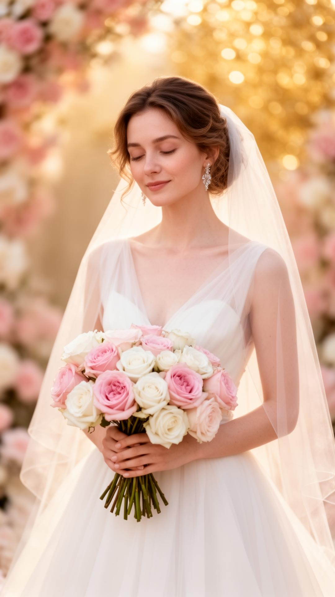
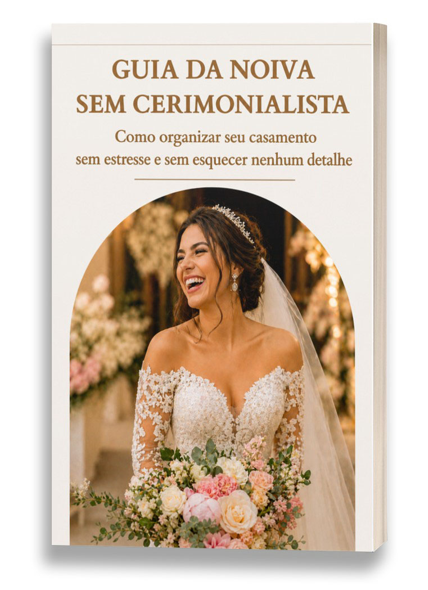

Para a noiva sem cerimonialista
Casamento impecável sem cerimonialista
Siga o roteiro, corte custos e mantenha a sanidade. Um passo a passo que não deixa nada escapar — do “sim” ao “eu aceito”.

+1.200 noivas casaram lindas, sem stress
Respira. Acertamos o alvo.
Você quer um casamento bonito, organizado e com a sua cara — mas cerimonialista não cabe no orçamento.
Morre de medo de esquecer um detalhe crucial: convite, fornecedor, roteiro, entrada, votos…
Está cansada de dicas soltas na internet. Você quer um plano. Em ordem. Sem buracos.
Quer paz no grande dia — sem madrinhas correndo, sem noivo perdido, sem família em pânico.
Este guia existe para você ter controle — e viver o sonho do seu casamento de verdade.

Você ficou noiva — e a avalanche começou.
Prazos, fornecedores, entradas, músicas, votos, roteiro da igreja, recepção… e aquele medo gelado: “E se eu esquecer algo e tudo desandar?”
Você viu casamentos lindos com cerimonialista — e a conta vai além do seu orçamento. Viu também o oposto: fila descoordenada na igreja, música errada, ninguém sabe a hora de entrar. Pânico.
Você quer um plano. Completo. Em ordem. E ninguém te entregou isso — até agora.
a bússola do seu grande dia
Sozinha não é sem direção.
O Guia da Noiva Sem Cerimonialista coloca seu casamento no trilho com o método Noiva Sem Stress: você segue um passo a passo fechado — do “sim” ao “eu aceito” — e nada fica solto.
Sem achismo. Sem checklists soltas. Um roteiro único que amarra cada etapa até o grande dia.
Plano fechado
Do noivado ao altar, em ordem
Sem buracos
Nada fica para a sorte
Com a sua cara
Lindo, organizado, seu
Tudo no lugar. Você apenas segue o roteiro.
Guia da Noiva (PDF)
Plano passo a passo do noivado ao altar. Acesso imediato por e-mail.
Checklists & cronogramas
O que fazer, quando fazer e como conferir. Tudo pronto.
Roteiro de cerimônia & recepção
Entradas, músicas, tempos e alinhamento com padrinhos e equipe.
- Amiga de Noiva - Fiel Escudeira - o manual para sua melhor amiga se tornar parceira do seu sonho no grande dia
- Check-List da fiel Escudeira na Igreja - tudo organisado ponto a ponto para o sucesso da cerimônia na igreja
- Mapa do Cortejo - para você não erar nada durante as entradas do seu casamento
- As 20 Músicas Mais Tocadas em Casamentos
- Manual de Madrinha Perfeita - o guia completo para suas madrinhas brilharem ao seu lado
- Script de Ouro - o roteiro definitivo para conduzir sua cerimônia com elegância e emoção
Noivas reais. Casamentos reais.
"Eu não tinha dinheiro para cerimonialista e chorava achando que meu casamento não seria como o das minhas amigas. Comprei e foi perfeito. Todo mundo jurou que eu tinha equipe."
— Letícia, 27
"Minha cerimônia foi impecável. Fiz praticamente tudo sozinha e ao adquirir junto o ebook para minha amiga ajudar no grande dia, foi decisivo. Lindo e organizado."
— Ana Paula, 31
"Fui a um casamento caótico: entradas erradas, músicas trocadas. Decidi que o meu não seria assim. A diferença foi absurda — saiu lindo e no trilho."
— Bruna, 24
O que muda quando você segue o Guia
Você sabe exatamente o que fazer, quando fazer e como conferir — sem perder prazos.
Roteiro de cerimônia e recepção no ponto: entradas, tempos, músicas, tudo alinhado.
Economia real: corta o custo do cerimonial sem cortar a beleza do seu dia.
Paz e presença: você curte o momento em vez de apagar incêndio.
Confiança: nada fica por conta da sorte — cada detalhe está no plano.
Sua família, padrinhos e equipe sabem o que fazer e quando fazer.
Economize no cerimonial. Invista no buquê.
tudo isso por apenas
à vista no PIX · ou em até 8x no cartão
- Guia da Noiva Sem Cerimonialista (PDF)
- Checklists e cronogramas prontos
- Roteiro completo de cerimônia & recepção
- Bônus: Amiga de Noiva - Fiel Escudeira
- Bônus: Check-List da fiel Escudeira na Igreja
- Bônus: Mapa do Cortejo - nupciais inesquecíveis
- Bônus: Lista das 20 Músicas Mais Tocadas em Casamentos
- Bônus: Manual de Madrinha Perfeita
- Bônus: Script de Ouro
Compra 100% segura · Acesso imediato por e-mail
Garantia incondicional de 7 dias
Teste o Guia por 7 dias. Se não sentir mais clareza, controle e alívio, peça reembolso. Devolvemos 100% do valor. Sem questionário. Sem novela.
Bônus inclusos apenas durante a promoção. Ao encerrar, o valor volta para R$ 140,00.
o seu grande dia te espera
Casamento lindo, sem cerimonial e sem stress.
Clique. Baixe. Organize.
E viva seu grande dia no controle — sem gastar com cerimonial.
7 dias de garantia · PIX ou Cartão em até 8x · Acesso imediato